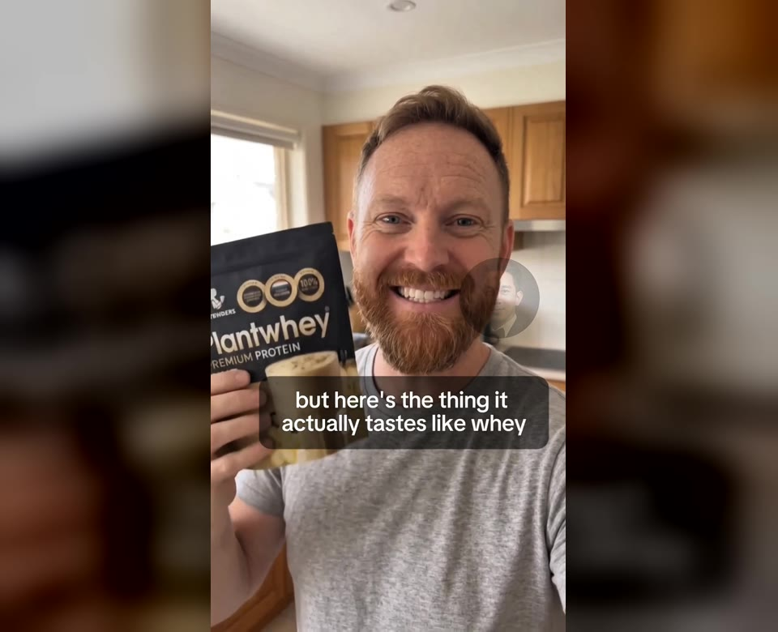
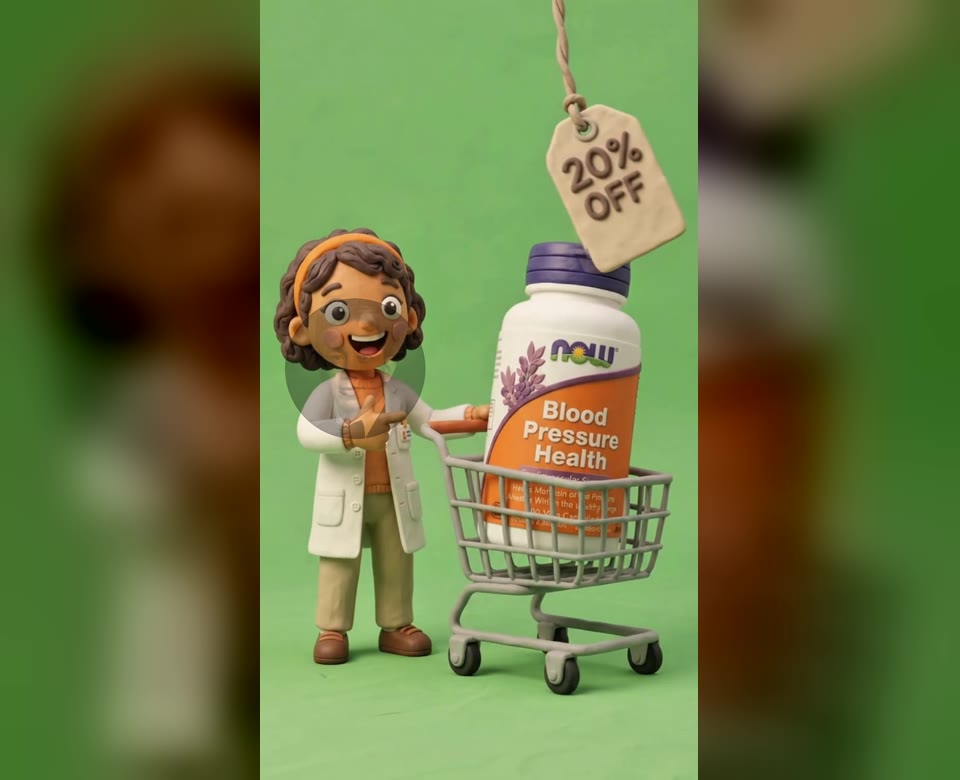

AI UGC Ads
Conversational, creator-style ads that bring the product into everyday life. Clear hooks, natural storytelling, and a purposeful call to action.
Hook variationsCreator-style storytelling9:16 creative
INDEPENDENT AI VIDEO SPECIALIST
I turn ideas into AI UGC ads, cinematic product stories, and imaginative video creatives. Made to catch the eye. Crafted to tell your story.

AI UGC / PRODUCT STORY
IMAGINATION IN MOTION01 / THE PORTFOLIO
Real frames. Different creative formats.
Explore the supplied video projects below.
Selected video creatives. Descriptions highlight the creative format and editing approach; no client affiliation or performance results are claimed.
02 / WHAT I CREATE
Three creative directions.
One considered approach to every frame.
Conversational, creator-style ads that bring the product into everyday life. Clear hooks, natural storytelling, and a purposeful call to action.
Make your product the main character. Atmospheric lighting, deliberate camera movement, and detail-led sequences built around your brand.
Worlds beyond the ordinary. Stylized characters, surreal environments, and visual narratives that turn an unexpected idea into motion.
03 / BEHIND THE FRAMES
I’m an AI video specialist focused on AI UGC ads, product ads, and AI-generated video creatives. My approach connects creative direction with thoughtful generation and editing, so every scene serves the story.
The tools can create possibilities. The creative choices give them purpose.
04 / THE PROCESS
A clear path from your brief
to a cohesive video creative.
Define the audience, message, references, and the one thing the viewer should remember.
Shape the script, hook options, storyboard, and visual direction before generating scenes.
Generate, refine, and select visuals with attention to product and character consistency.
Edit pacing, sound, captions, and formats. Review the final cut against the original brief.
A FLEXIBLE TOOLKIT
Chosen for the story, not the other way around.
Tool categories shown; add your actual software stack in portfolio.ini.